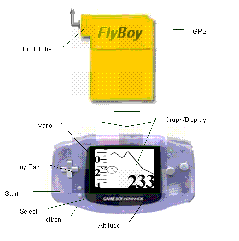
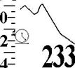
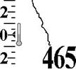
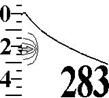
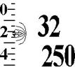
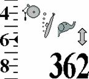
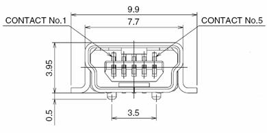
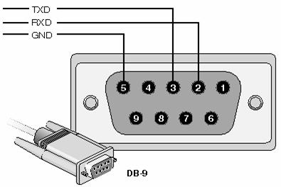

Basic Operation

With power off, insert the FlyBoy® vario cartridge as you would any GameBoy® game. Attach the nylon pitot tube and orient it in the desired direction. Turn on the power. The FlyBoy® starts with a calibration phase which lasts about 30 seconds. During this time one should keep the instrument sheltered from windy conditions. After about 30 seconds, the display should look like this.

· Vario – a “sliding” scale indicating climb/sink rate in either 100’s of feet per minute or meters per second. When the instrument is turned on – this will show 0 at the pointer.
· Altitude – will show altitude to the nearest foot or meter.
· Graph Display will be blank except for a “clock” icon in the lower left hand corner and a “creeping” line from the right which will advance at one dot per second. The icon identifies this display as altitude vs. time. The line shows relative altitude for the last 128 seconds at the rate of one dot per meter change.
The vario is now ready to use.
Sound
Whenever an increase in altitude is detected, the Flyboy® will emit a beeping sound through the GameBoy® speaker or headphones. As climb rate increases, the beeps will increase in frequency and pitch. When sink rate is below 600 feet per minute, an AAAOOGA sound is emitted. The volume can be adjusted by means of the volume control on the GameBoy®. If this volume is not sufficient, the best solution is to purchase a booster speaker. Search the web for “GameBoy® sound accessories” to find one appropriate to your GameBoy®.
Graph Display Selection
Basic Displays
All FlyBoy® varios include the following three basic displays. One can navigate between the displays using the left/right buttons of the GameBoy joypad.
|
 |
 |
Altitude vs. Time
Each vertical dot represents one meter of altitude change. Each horizontal dot represents one second. The graph is 128 dots wide so this graph shows the climb and sink for the last 128 seconds. A 45 degree slope will correspond to 1 meter per second (180 feet per minute). Adjusting airspeed to flatten the slope of this curve will minimize sink rate and maximize “hang time”
Temperature
Current temperature in degrees Fahrenheit or Celsius.
Lapse Rate
Temperature vs. Altitude. Each vertical dot represents 10 meters of altitude and each horizontal dot represents 1/16 degree Celsius. Since the graph is 96 dots high, this shows the temperature for the 960 meters (3168 feet) around the current altitude.
Airspeed
If the pitot tube is installed and airspeed sensing is enabled, the following displays are also available. One can navigate to between this group and the basic one with the up/down joypad buttons
|
 |
 |
Glide Path
This is similar to the Altitude vs. Time graph above. The difference is that each dot on the horizontal axis represents 10 meters (33 feet) travel through the air at the current airspeed. So the slope of the line will represent the current glide ratio and, by implication, current Lift/Drag ratio of the glider. Using this display, the pitch of the glider can be adjusted to maximize the glide ratio. Note that the vertical scale is 1 meter per dot while the horizontal scale is 10 meters per dot. So a glider with a glide ratio of 10 to 1 will show 45 degree angle on this display. Also note that this display will vary in lift and sink and be can be used to maximize glide in these conditions. However, wind direction is NOT taken into account. So if there is significant head or tail wind, the glide ratio shown in this display will be significantly different than glide over the ground.
Airspeed
The FlyBoy® measures dynamic air pressure with a Pitot tube. This measurement is used to calculate the true airspeed. This calculation takes into consideration that fact that a glider “floats” upon a “cushion” of higher pressure air under the wing. Once the glider is no longer flying, this number is no longer valid. Hence, on the ground before launching, this display should show a number which approximates the stall speed of the glider. Below, we explain how to set the glider stall speed in the FlyBoy®.
Wind Velocity
Current wind velocity in either miles or kilometers per hour. Note that this is a very accurate measure of wind velocity. This can be verified by walking with the instrument indoors and reading your airspeed. It can be handy for checking wind direction before launching. It differs from Airspeed above, in that there is no adjustment made for the fact that the glider induces a change static pressure under its wing. It is not useful when the glider is in flight.
Global Positioning System
If a GPS unit has been connected to the FlyBoy® and GPS option has been enabled, the following group of displays is available. One navigates
Travel Path
This is the true glide path over the ground. It is differs from the glide path in that the horizontal distance is taken from the GPS input. Adjusting glider pitch to “flatten” the slope of this line will maximize distance traveled over the ground for the current air conditions. That is, Lift/Sink as well as Tail/Head wind will be taken into account. The path traced by the graph is the path the glider follows as would be seen by and observer from the ground. Adjusting airspeed to minimize the slope of this line will maximize distance covered for a given altitude and wind conditions.
Groundspeed
Speed and compass heading over the ground as determined by the GPS.
Wind Direction
Given input from the Pitot tube and GPS while the glider travels at various headings, it is possible to determine the wind velocity and heading. This display shows the heading and velocity of the glider in relation to the glider. That is, it provides a “virtual windsock”. In the above illustration:
· The best estimate of the wind direction is shown as a dark dot from the source of the wind. In this example, this is the 2 o’clock position relative to the glider heading.
· Wind velocity is estimated to be 7 miles per hour.
Wind is by nature variable. Our procedure for estimating wind direction and velocity requires time. So our estimate for these variables will include at least some uncertainty.
· This wind velocity reading may “bounce” every second between a maximum and minimum estimate. Although it can’t be shown in this printed manual, this number is actually “bouncing” between 5 and 7 miles per hour. This range should have a 67% probability of including the actual wind velocity. In this case, that means that there is a 67% chance that the true wind velocity is between 5 and 7 miles per hour.
· Wind direction estimate is surrounded by a by a “crescent” indicating the certainty of the estimate. In the example above, the wind is coming from between the 1 o’clock and 3 o’clock direction with 95% certainty. Note that there are 5 dots. These may coalesce to one dot if there is high confidence in the estimate. They may spread apart if there is lower confidence in the estimate. The center dot is the best estimate. The adjacent dots correspond to 67% certainty and the outer dots correspond to 95% certainty in the estimate.
Remember that the wind direction crescent is relative to your glider’s current heading. As you turn the glider, the crescent will rotate in the opposite direction so that it always shows the current wind direction. You can use this information to improve your flying skills. If you’re setting up to land, you’ll want the crescent at the top of the display so you’ll be headed into the wind. If you’re sinking out and looking for a thermal, you’ll want to have the crescent at the bottom of display – indicating at tail wind. This will permit you to cover the maximum amount of territory thereby maximizing your chances of finding a thermal.
If wind conditions are unstable, there is no such thing as a “true” wind direction. The size of the crescent will reflect that this fact and provide a visual cue as to the variability of the direction. Above we see a glider landing in wind whose direction is varying +/- 25 degrees.
If the glider heading has not changed in a while, there may not be enough information to precisely calculate the wind direction and velocity. In the case of the former, the crescent will disappear. In the latter case, the wind velocity will be shows as a “?”. When this happens, turning the glider should result in enough information so that reliable estimates can be regenerated.
Using Radio Buttons to Facilitate Display Navigation
So far we’ve described three groups of displays of three displays each. One can navigate from group to group via the up/down buttons on the joypad. The small icon on the lower left of the graph display indicates which group is currently selected. Within a group one can change displays via the left/right buttons on the joypad. That is, the displays are arranged as a three by three table selects the next display with one of the joy pad buttons. This is easy enough to do in flight. To make this even easier, one can assign each of the A and B radio buttons to one’s favorite displays. Once such an assignment is made, one can jump directly to the display with one press of the assigned radio button. Pressing the same radio button again will return to the original location.
To assign a radio button to a particular display:
· Navigate to the desired display.
· Hold down the desired radio button.
· Press and release the “Select” button.
· Release the radio button.
Calibration and Configuration
|
|
Calibrate altitude. Use up/down on joy pad to adjust current altitude. |
|
|
|
Select foreground color. |
|
|
|
Select background color. |
|
|
|
Select English or metric units. |
|
|
(see below) |
Configure alarms |
|
|
10 |
Calibrate stall speed. |
|
|
(see below) |
|
Select current aircraft |
The Flyboy® can be configured to taste. Enter configuration mode by pressing the Select button on the GameBoy®. One of the icons in the left hand column will be displayed. Using the up/down buttons on the joy pad, move up and down through the icons until the row corresponding to the desired setting is selected. Now navigate to the right to select this setting for modification. At this point, the display will match the second column. Using the up/down buttons, alter the setting as desired. When finished, return to the first column with the left arrow.
At any time, one can return to normal operation by pressing Start. At this point the settings are saved in the FlyBoy® cartridge. They will be reloaded every time the FlyBoy® is turned on.
Alarms
The FlyBoy® has a complete set of alarms. These alarms are pre-configured to common settings. However, many pilots will want to set these alarms according to their own requirements. To begin the process of setting the alarms, navigate to the right from the alarm icon on the configuration screen (above).
Select Alarm
Now navigate to the right to select which alarm you want to configure. By navigating up/down will select the desired alarm from the following table
|
Climb |
Used by soaring pilots to indicate that the glider has found lift |
|
|
Sink |
Used when vario detects |
|
|
Stall |
Sounds three times when the airspeed drops below a minimum threshold. Useful as a “flair alarm” for hang glider pilots |
|
|
Max Speed |
Sounds whenever the glider airspeed exceeds the specified value |
|
|
Max Altitude |
Sounds whenever the glider altitude exceeds the specified value |
|
|
Min Altitude |
Sounds whenever the glider altitude drops below a specified value. Useful for balloonists. |
Sound Selection
Once the alarm has been selected, navigate to the right and select the sound desired for the alarm by then navigating up and down. As each sound icon is displayed, a sample of the sound is played.
|
Doodle-ooldle-do … |
|
|
Buzzzzzzz! |
|
|
Booonnngg! |
|
|
No sound |
Alarm Threshold
Navigating to the right will permit one to specify at which point the alarm sounds. This will add the icon to the display. The threshold is displayed according to the alarm being set.
· For vario alarms (climb and sink), this will slide the vario display up/down to the desired set point
· For altitude alarms (max and min), the altitude display will show the alarm setting rather than the current altitude.
· For airspeed displays, the airspeed setting at sea level next to the icon.
Notes on alarms
· Note that the screen shows the current selections and one can move to a previous one by navigating left with the joy pad. The screen shows all the current choices. For example, if one is configuring the sink alarm threshold for hang gliders to be the buzz sound with a threshold of 600 feet / minute down, the screen will look like:

· To change the alarm or sound selection navigate back to the left, change the selection and more forward to the right again.
· When a balloon is the selected aircraft, the airspeed alarms cannot be set.
· Sounds with a pitch like doodle-ooldle-do and booonnngg, increase in pitch when they are used for climb and max events. That is, as the climb rate increases, the pitch increases. Similarly, if this sound is used for the sink alarm (used by balloonists), the pitch DECREASES as the aircraft sinks faster.
· Alarms for stall and for min altitude sound three times each when the threshold is crossed. This prevents the alarm from continuing to sound once the aircraft comes in to land. It also makes this alarm useful for hang glider and paraglider pilots who want to flair at the correct instant. Naturally, using it for this purpose will require some investment in effort to select the correct alarm threshold for stall speed.
· Airspeed alarms are really measures of the dynamic pressure detected by the Pitot tube. The airspeed number refers to the equivalent airspeed at sea level. The stall speed of a glider increases with altitude. Each 4000 meters (12000 feet) of altitude increases stall speed by about 40 percent. The FlyBoy® automatically takes this into account In determining when the stall alarm is to be sounded. For example, if the stall alarm were to be set for 25 kph (15 mph) and the glider were flying at 4000 meters (13200 feet), the stall alarm will sound when airspeed drops through 35 kph (21 mph). That is, the stall alarm useful to signal the proper time to flair at all altitudes.
· The same explanation applies to the VNE (Velocity Not to Exceed) alarm. At higher altitudes the alarm will sound at a higher airspeed. This is consistent with the fact that the stress on the glider components is proportional to the lift and drag on the structure which, for the same airspeed, diminishes at higher altitude.
Select Aircraft
For Alarms and stall speed, the FlyBoy® maintains separate settings depending on the type of aircraft selected. This permits multi-wingual pilots to switch from one group of settings to another just by selecting a different aircraft. The last aircraft selected determines which settings are to be used. Navigate right/left to select a particular aircraft type.
|
Hang Glider |
|
|
|
Paraglider |
|
Balloon |
|
|
Sailplane |
Pitot Tube Installation
The left side of the FlyBoy® has a threaded 1/8 inch barbed elbow. This is the entry point for the Pitot tube. The Pitot tube itself is a 1/8 inch inside diameter nylon tube. Alternatively, a 1/8 flexible PVC tubing can be used to route Pitot tube input from any convenient location.
GPS Connection
The right side of the FlyBoy® has a female USB connector for serial data input. Note that this is NOT a USB input. This connector was selected merely for it’s convenient form factor and other features. Do NOT connect the FlyBoy® to a USB port with this connector. This could result in damage to the FlyBoy®, GameBoy®, or the computer it is connected to. To connect your GPS to the FlyBoy®, one will generally need to make a custom cable based on the pin outs of the GPS and pin outs of the FlyBoy® GPS connector as described below.
Here is what the FlyBoy® GPS connector looks like as seen from the left side of the FlyBoy®. The dimensions are in millimeters. Note the pin numbers. This is a standard female mini-USB 2.0 type B connector with 5 pins.

It will mate with a standard mini-USB 2.0 type B cable. Such cables usually include a permanent molded on mating male connector. These cables are commonly available at a reasonable price and can be used as a starting point for creating a cable which connects your GPS to the FlyBoy®
The FlyBoy® vario can accept two types of connections from GPS. One is a standard RS232 serial connection which many GPS units use to connect to a personal computer. The other is a 0-5 volt signal which is supplied by many OEM GPS units. The FlyBoy® CANNOT be connected to a GPS which relies on a USB interface. Connection for each of these two types is summarized in the table below.
|
FlyBoy® Pin Number |
Description on USB connector |
RS232 |
OEM interface 1 |
OEM interface 2 |
|
1 |
4.5-5.0 volts (red) |
Not used |
May power GPS |
May power GPS |
|
2 |
Data – (white) |
TXD pin # 3 |
Signal 5/0 v |
Signal Ground connect
to pin 5 |
|
3 |
Data + (green) |
Signal Ground connect
to pin 5 |
Signal Ground connect
to pin 1 |
Signal 5/0 |
|
4 |
N/C |
|
|
|
|
5 |
Ground (black) |
Not used |
May power GPS |
May power GPS |
RS-232 Serial Connection
This is currently the most common type of GPS output. It is often used to connect the GPS to a PC. Typically, the GPS cable will terminate with female DB9 connector as shown here.

Only two wires need be connected to the FlyBoy® from the GPS. If this is currently attached to a female DB9 serial connector designed to be attached to a PC then
· Locate the signal ground on the GPS output cable. This should be found on pin 5 of that connector. Connect this to pin 3 of the FlyBoy® GPS interface.
· Locate the transmit data signal (TXD) on the GPS output connector. Connect this to pin 2 of the FlyBoy® GPS interface.
· Jumper signals on pin 3 to pin 5 on the USB connector with a separate piece of wire. This can be done inside either end of your connector cable.
OEM Interface
The FlyBoy® vario can also be used with a number of GPS which use a simple 0-5 volt serial communication protocol. The advantage of these units is that they can be powered from the FlyBoy® GPS connector which supplies 0 and 5 volts and therefore don’t require an extra set of batteries for the GPS. However, the GameBoy® batteries will be consumed approximately twice as fast. Connection to such a unit should be made according to one of the two columns labeled OEM Interface in the table above. Connecting the FlyBoy® according to oe
· Locate the power ground of the OEM unit. Connect this to pin 5 of the USB connector. This should be a red wire.
· Locate the 5 volt power input for the OEM unit. Connect this to pin 1 of the USB connector. This should be a black wire.
· Take a guess as to whether your GPS uses OEM Interface 1 or 2 from the above table and make connections accordingly.
Make sure your GPS is set for NMEA output. Connect to the Flyboy® with your new cable and power up. Your FlyBoy® vario should be operating with GPS input. Check this out by navigating to the groundspeed/compass display and verify that it shows your current groundspeed (usually zero at this point).
Troubleshooting Serial Connections
A number of problems can occur when connecting GPS input to the FlyBoy®.
· Double check that the GPS is emitting NMEA output data at 4800 baud.
· Many RS232 cables and connectors may not agree with the description above. Try interchanging the signal and ground wires. The FlyBoy® has circuitry to protect against inverting these signals so this cannot damage the unit. RS232 cables generally have two wires labeled data out and data in. Unfortunately, in/out depends which way one is looking at the connector. If you think your connecting to out, try connecting to in instead.
· Cables for OEM units might be confusing. If you’ve made connections according to OEM Interface 1 above, try connecting according to OEM Interface 2 instead. Likewise, if you’ve used Interface 2, try Interface 1 instead.
· Power consumption for OEM GPS will vary a lot depending on the unit. The GameBoy® can supply 60 ma of power to an external unit. If more than this drawn from the GameBoy, the unit may shut down. In order to use such a GPS, power will have to be supplied by other means and the 0/5 volts supplied on the FlyBoy® connector should be left unused.
· Voltage requirements for OEM GPS vary a from unit to unit. The FlyBoy® vario supplies 4.5-5.0 volts through its GPS connector. Verify that this is compatible with your OEM unit. We have tested the FlyBoy® vario with the Garmin 18 LVC and found it to function in a satisfactory manner when connected according to OEM Interface 1 from the above table.
· Remember that the GPS takes some time to “sync” and produce valid response. Make sure your testing with a “hot” GPS which has had time to find its current location.
Frequently Asked Questions
· Why the GameBoy®?
The fundamental goal of this instrument is to provide the most “Bang for the Buck”. In this context that means providing the most accurate and useful instrument at the lowest price possible. The GameBoy® includes an easy to read video mapped display, sound, buttons, proven robustness at a cost between $10 and $90 depending the type and source. There is also a variety different GameBoy® models with different features and a variety of useful accessories such as wireless headphones and the like which are also widely available at a reasonable price. Given the relatively small size of the market for this kind of product, any attempt to make a custom unit with all these features and options will necessarily result in a high priced item. The developers of the FlyBoy® have chosen to concentrate their efforts on those aspects directly related to vario function – leveraging on the superb user interface features already available in the GameBoy®.
· Does this alter the GameBoy®?
No. All the specialized electronics and software required to transform any GameBoy® into a precise and sophisticated flight instrument are contained on the FlyBoy® cartridge. At any time, this can be removed and the GameBoy® will be available for playing your favorite game.
· Is this legal?
As far as we can tell – yes. No copyrighted components are used in the FlyBoy®. Nintendo has been very aggressive about suing businesses which traffic on pirated Games. After some failed attempts to discourage add-ons like the FlyBoy®, it seems that they have decided to ignore it.
· What’s the point of making it so accurate? Do we really need altitude to less than a foot?
This is necessary in order to get good response time. Let’s look at an example. Suppose an instrument has resolution to within 1 meter. And suppose we take two readings one second apart. The first reading is 1000 meters (+/- one meter) and the second is 999 meters (+/- one meter). Thus the sink rate could be anywhere between 1 +/- 2 meters/second. That is, the glider could be climbing at 1 meter/second or sinking at 3 meters per second. There isn’t enough accuracy in the calculation to know what the true sink rate is. Without more accuracy, the only way to address this is to take measurements farther apart – which requires more time so one can get an average sink rate. The FlyBoy® vario does not do any averaging – it responds with sound within a second to any change of altitude of ½ foot or more. Users will experience few if any “false positives”. The graphs of altitude vs. time and glide path will usually be smooth and without “jaggies”.
· How long do the batteries last?
That would depend upon the amount of time that alarms are sounded, and the type of GameBoy®. We have tested the GameBoy Color® with two 2000mH AA NmH batteries sitting on a desk. It ran for 24 hours before the batteries went dead.
· Why does the graph line have “gaps” in it.
The GameBoy® has an internal bug which prevents more than 10 “sprites” to be displayed on the same line. In the FlyBoy® vario, this manifests itself as “gaps” in the graph when the graph is a level horizontal line. This would be quite annoying but for the fact that in practice it only occurs when the glider is on the ground and not climbing and/or sinking for a couple of minutes. In practice it is almost never a problem.
History
This project started some time ago. I worked on it from time to time over the past few years spurred on by encouragement from my friend Gilbert Roberts. Gilbert is the inventor of the classic Roberts vario. Although now rather out of style, it still sets the standard for response time. The FlyBoy® aspires to be the legitimate heir to the legendary instrument. Gilbert has shared with me all his long experience with components and techniques required to achieve this kind of accuracy. To this I’ve added my own experience with digital electronics and software development along with a sound economic idea to create this great instrument.